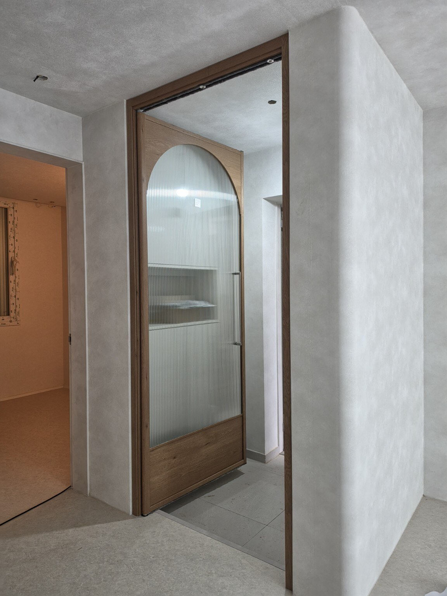
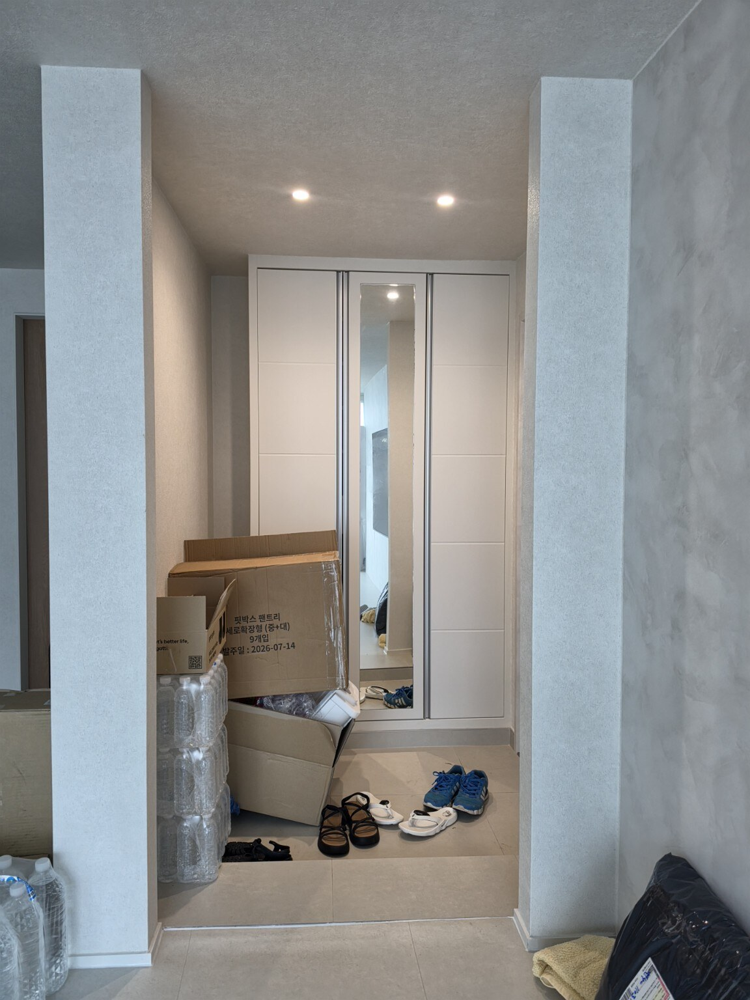
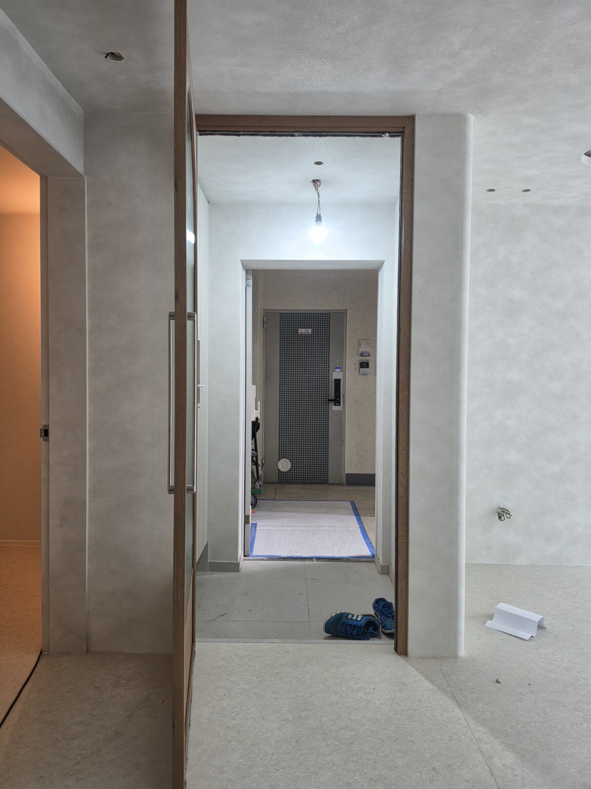
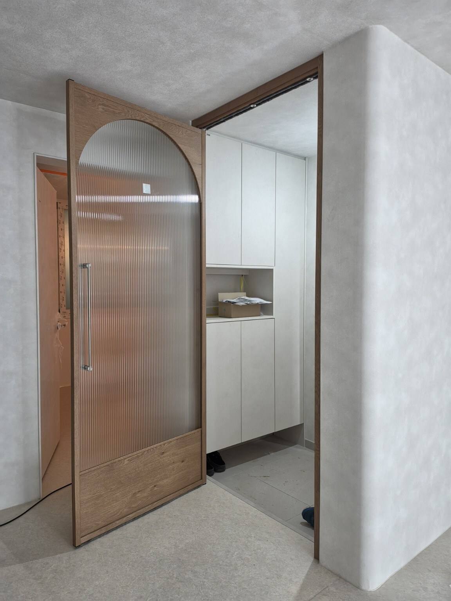
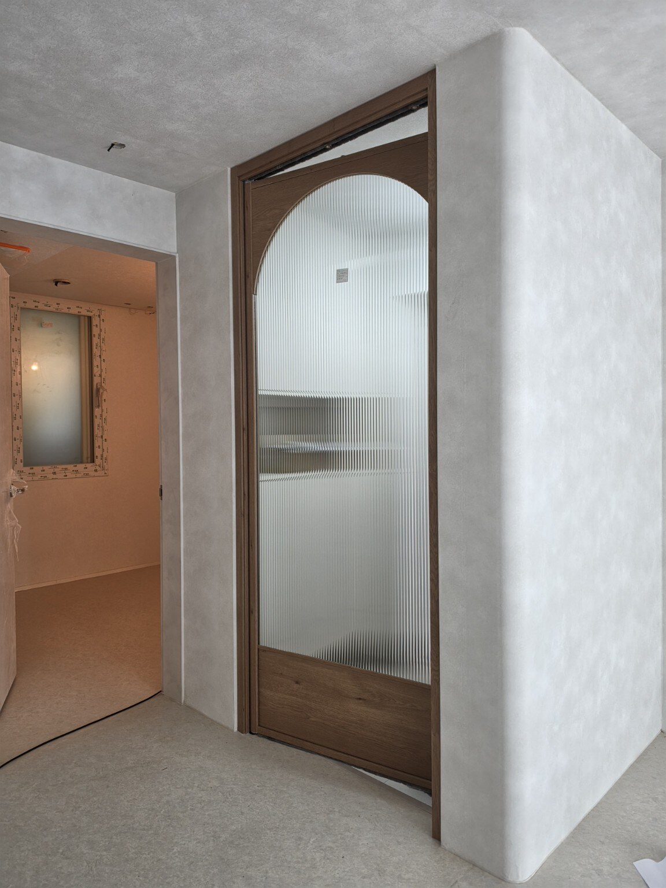
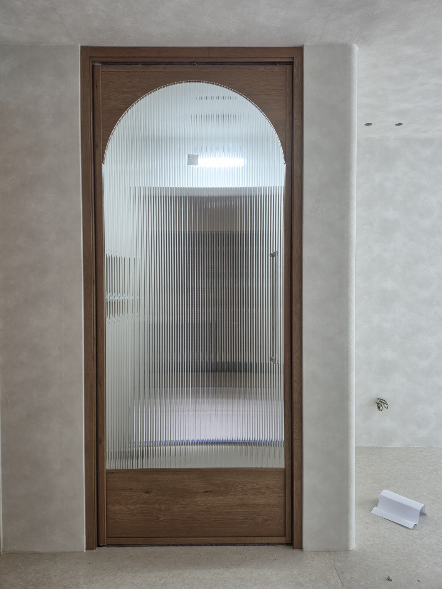

아치 디자인을 적용한 1짝 현관중문
이번 현장은 신동아 리버파크 703동 33평 현관에 한 장의 문짝으로 구성한 양방향 여닫이 중문을 시공했습니다. 상부를 아치 형태로 디자인해 직선 위주의 현관 공간에 부드러운 포인트를 더했습니다.
프레임에는 영림 184번 색상을 적용하고, 유리는 모루 세로결 강화유리를 사용했습니다. 세로 방향의 유리 결이 아치 형태와 함께 보이면서 중문의 디자인 요소를 살려 줍니다.
양방향 여닫이 방식은 현관과 실내 양쪽에서 출입 방향에 맞춰 문을 열 수 있도록 구성하는 방식입니다. 같은 33평이라도 현관 폭과 벽체 위치, 생활 동선에 따라 적합한 문 크기와 구성이 달라질 수 있어 현장에 맞춘 제작이 중요합니다.
시공 사진







신동아 리버파크 현관중문 묻고 답하기
어떤 중문을 시공했나요?
영림 184번 색상, 모루 세로결 강화유리를 적용한 1짝 양방향 아치 여닫이 현관중문입니다.
아치형 중문은 어떤 특징이 있나요?
문 상부를 곡선으로 구성해 직선형 중문과 다른 부드러운 디자인 포인트를 만들 수 있습니다.
모루 세로결 강화유리는 어떤 유리인가요?
세로 방향의 결이 보이는 유리이며, 이번 현장에는 강화유리를 적용했습니다.
양방향 여닫이는 어떻게 사용하나요?
현관과 실내에서 출입 방향에 따라 양쪽 방향으로 열 수 있도록 구성한 방식입니다.
현관 크기에 맞춰 제작할 수 있나요?
네. 실제 현관 폭과 벽체, 출입 동선을 확인해 현장에 맞는 구성을 상담합니다.